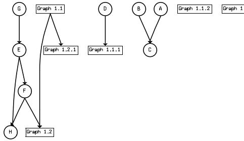
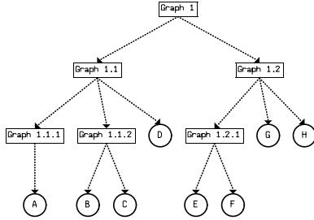
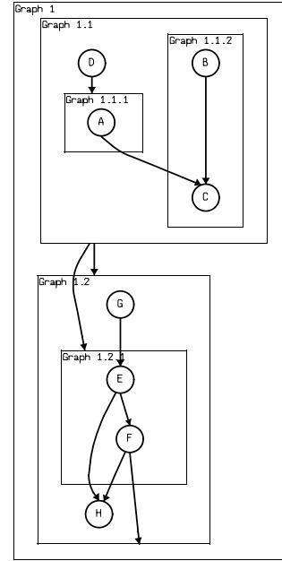
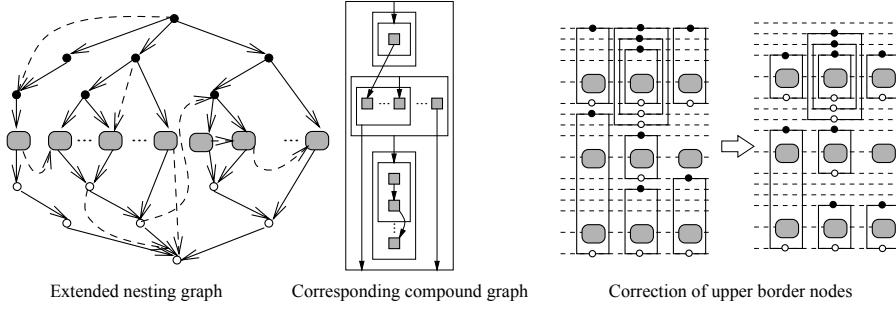
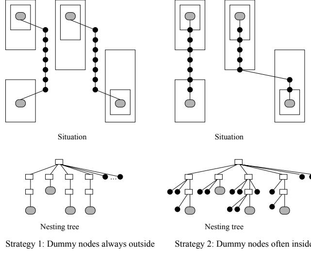
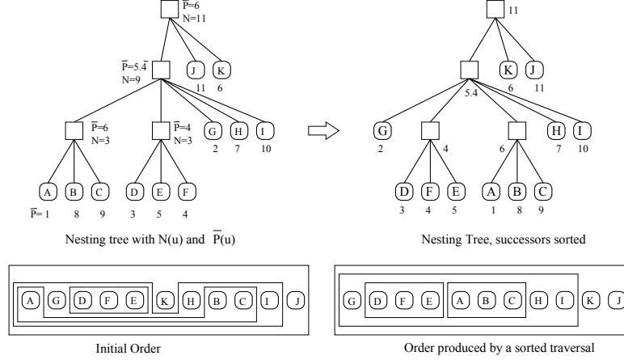
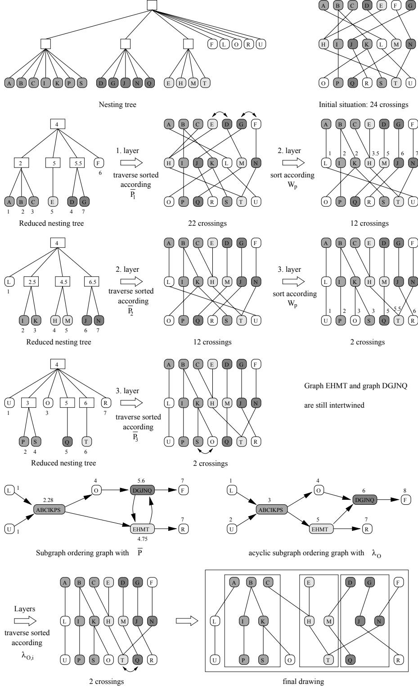
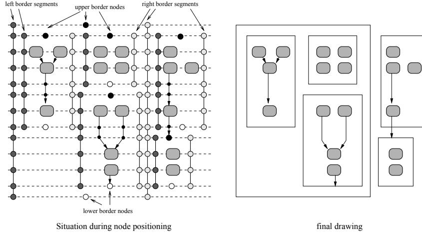
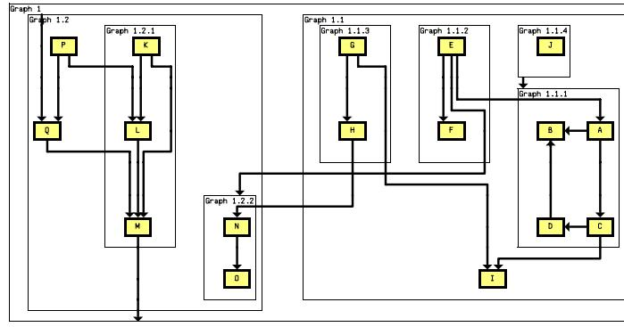

Layout of Compound Directed Graphs
Technical Report A/03/96
Georg Sander
(
sander@cs.uni-sb.de
)
Universität des Saarlandes,
FB 14 Informatik,
66041 Saarbrücken
June 5, 1996
Abstract:
We present a method for the layout of compound directed graphs that is based on the hierarchical layer layout method. Our method has similarities with the method of Sugiyama and Misue [7] but gives different results: It uses a global partitioning into layers and tries to produce placements of nodes such that border rectangles can be drawn around the nodes of each subgraph. The method is implemented in the VCG tool.
1 Introduction
Compound graphs are graphs where nodes are grouped into nested subgraphs. Compound graphs are useful in many situations. For instance, in interprocedural control flow diagrams, the nodes of each procedure should be grouped together, and in circuit diagrams, the elements of each module should be surrounded by rectangles indicating its borders.
There are still not many layout algorithms for compound graphs. Most algorithms recursively deal with subgraphs as large nodes [4, 3] but ignore the global connectivity: Each subgraph is laid out independently which may result in too much edge crossings, if there are edges going beyond the borders of subgraphs. Other methods are restricted to planar graphs [2].
We present a layout method for general directed compound graphs that is based on layout in layers [8, 1]. A similar method was presented by Sugiyama and Misue [7]. There, a
proper compound digraph
is constructed where each subgraph consists of local layers. Different to that, we use a global partitioning into layers and try to produce placements of the nodes within the layers such that border rectangles can be drawn around the nodes of each subgraph afterwards. Thus, we consider our method rather as an alternative to [7] than as an extension of [7].
2 General Notation
A
simple directed graph
consists of the set of nodes
and the set of edges
. The set
contains the
direct predecessors
, the set
contains the
direct successors
of a node
. We write
for an edge
and
for a (potentially empty) sequence of edges
(a
path
). A
cycle
is a nonempty path
. If a simple graph does not contain cycles, we call it
acyclic
or
DAG
. A
tree
is a DAG
consisting of
nodes and
edges which has a special root node
with
for each
. The
leaves
of a tree have the property
. All other nodes except the leaves are called
inner nodes
of the tree.
A
compound graph
consists of a simple directed graph
and a tree
(Fig. 1). The set
contains the leaves of
which are called
base nodes
, and the set
contains the inner nodes of
which are called
subgraphs
. In a compound graph,
represents a connectivity relation between the base nodes and subgraphs.
represents a nesting relation: subgraphs may contain other subgraphs or base nodes. We say
belongs to
iff
.
Remark: a compound graph is not recursively defined as a graph whose nodes might be graphs whose nodes might be graphs etc. There, we would only allow connectivity edges between nodes at the same nesting level. The notion
compound graph
is more general because it may contain connectivity edges that cross the borders of nested subgraphs.

Diagram illustrating the connectivity relation
. It shows nodes G, E, F, H, D, B, A, C and their connections to subgraphs Graph 1.1, Graph 1.2, Graph 1.1.1, Graph 1.1.2, and Graph 1. The connections are: G to E, E to F, F to H, D to Graph 1.1, B to A, A to C, Graph 1.1 to Graph 1.2.1, Graph 1.1 to Graph 1.1.2, and Graph 1.2 to Graph 1.2.
Connectivity relation G' showing nodes G, E, F, H, D, B, A, C and their connections to subgraphs Graph 1.1, Graph 1.2, Graph 1.1.1, Graph 1.1.2, and Graph 1.
Connectivity relation

Diagram illustrating the nesting relation
. It shows a hierarchical structure of subgraphs: Graph 1 (root) contains Graph 1.1 and Graph 1.2. Graph 1.1 contains Graph 1.1.1 and Graph 1.1.2. Graph 1.2 contains Graph 1.2.1 and Graph 1.2.2. Graph 1.1.1 contains A, Graph 1.1.2 contains B and C, Graph 1.2.1 contains E and F, and Graph 1.2.2 contains G and H.
Nesting relation T' showing a hierarchical structure of subgraphs Graph 1, Graph 1.1, Graph 1.2, Graph 1.1.1, Graph 1.1.2, Graph 1.2.1, and Graph 1.2.1.
Nesting relation

Diagram illustrating the layout of the compound graph. It shows the visual representation of the nesting relation
with nested rectangles representing subgraphs. The root Graph 1 contains Graph 1.1 and Graph 1.2. Graph 1.1 contains Graph 1.1.1 and Graph 1.1.2. Graph 1.2 contains Graph 1.2.1 and Graph 1.2.2. Connectivity edges are shown as arrows between nodes within the subgraphs.
Layout of the compound graph showing the visual representation of the nesting relation T' with nested rectangles and connectivity edges.
Layout of the compound graph
Figure 1: Compound Graph
3 Layout Conventions
The aim is to visualize the connectivity relation by arrows and the nesting relation by nested border rectangles. These show which nodes and subgraphs belong to the same subgraph. We use the following layout conventions: (a) Base nodes are partitioned into layers. All nodes of the same layer have (nearly) the same
-coordinate. (b) Base nodes do not overlap edges or other base nodes. (c) Connectivity edges may have bend points or may cross each other, but we try to avoid bend points and crossings when possible. (d) Connectivity edges should be uniformly oriented when possible (e.g., top down). If the graph is cyclic, it is not always possible. (e) A border rectangle of a subgraph
contains exactly the base nodes and the rectangles of subgraphs that belong to
. (f) The border rectangles of two nonnested subgraphs do not overlap. (g) Connectivity edges may cross border lines, but we try to avoid such crossings when possible.
The layout algorithm to satisfy these conventions is a variant of the hierarchical method of layout in layers [8, 1]. First, we partition the base nodes into layers. Here we must consider conventions (a), (d) and (g). Connectivity edges crossing several layers are split into sequences of dummy nodes and short edges. The result is a
proper hierarchy
where all connectivity edges are between adjacent layers. Next, we reorder the base nodes and dummy nodes within the layers such that the result has few crossings. Here we must consider conventions (c), (e) and (f). Finally, we calculate the absolute coordinates of
the base nodes, dummy nodes and the border rectangles (considering conventions (b), (e) and (f)) and draw the edges as line sequences between the dummy nodes.
4 Partitioning into Layers
Layers are numbered top down. The uppermost layer has the number 1. The task is to calculate ranks
for all base nodes indicating the layer
belongs to. Connectivity edges should preferably point top down. A subgraph
has an upper border with rank
and a lower border with rank
. The nesting conventions imply the following rule:
-
• If a bordering rectangle of a subgraph
is above (or below, resp.) another base node or subgraph
then all nodes
belonging to
are automatically above (or below, resp.)
.
This influences the partitioning. Example: Let
be a compound graph, let two subgraphs
and
be nonnested, let the base node
belong to
and
belong to
. If two edges
and
exist, then one of these must be reverted, i.e., it points converse to the uniform edge orientation, although
does not contain a cycle. The combination
contains the cycle. On the other hand, if
exist, then the combination
contains the cycle
but the edge
need not to be reverted. It may point to the lower border of the rectangle of
.
Definition 1
A legal rank assignment consists of numberings
,
, and
, where
-
(1)
for all
.
-
(2)
for all
,
with
.
-
(3)
for all
with
.
To calculate the positions of the upper and lower borders of rectangles, we simply introduce two dummy nodes
and
for each subgraph
and assign ranks to them. We call them
border nodes
. Then, we define
and
, i.e., the upper (or lower, resp.) border of the rectangle is drawn in the layer that contains
(or
, resp.). Since the borders of rectangles are usually much thinner than base nodes, we do not mix base nodes and border nodes within the layers. Layers either contain only border nodes or only base nodes. Between two layers of base nodes, there may be at most
layers with border nodes where
is the depth of the tree
. Thus, we assign multiples of
as ranks to the base nodes while all other layers are reserved for border nodes (Fig. 2, left). After the partitioning, empty layers are removed.
![Figure 2: Layer Assignment and Nesting Graph. The figure consists of three parts: 'Nested graph', 'Layer partitioning', and 'Nesting graph'. The 'Nested graph' shows a tree structure with nodes labeled a, b, c, d, e, f. The 'Layer partitioning' part shows nodes grouped into layers: a^{(-)}, e^{(-)}, b^{(-)}, f^{(-)} in the top layer (Nr. 2k+1), and d^{(+)}, d^{(-)}, c^{(+)} in the middle layer (Nr. 2(2k+1)). The 'Nesting graph' shows a directed graph with nodes representing the layers, divided into an 'upper nesting tree' and a 'lower nesting tree'.](f9a14fbfecbd7d059226cc93677d721b_img.jpg)
Figure 2: Layer Assignment and Nesting Graph. The figure consists of three parts: 'Nested graph', 'Layer partitioning', and 'Nesting graph'. The 'Nested graph' shows a tree structure with nodes labeled a, b, c, d, e, f. The 'Layer partitioning' part shows nodes grouped into layers: a^{(-)}, e^{(-)}, b^{(-)}, f^{(-)} in the top layer (Nr. 2k+1), and d^{(+)}, d^{(-)}, c^{(+)} in the middle layer (Nr. 2(2k+1)). The 'Nesting graph' shows a directed graph with nodes representing the layers, divided into an 'upper nesting tree' and a 'lower nesting tree'.
Figure 2: Layer Assignment and Nesting Graph

Figure 3: Extended Nesting Graph and Border Correction. The figure shows three stages: 'Extended nesting graph' which adds more nodes and edges to the nesting graph; 'Corresponding compound graph' which maps the extended nesting graph to a compound graph structure; and 'Correction of upper border nodes' which shows a series of diagrams illustrating how the upper border nodes are adjusted to form a proper nesting structure.
Figure 3: Extended Nesting Graph and Border Correction
Definition 2
The
nesting graph
of a compound graph
consists of
-
(1) the set of nodes
,
-
(2) an edge
for each
with
,
-
(3) an edge
for each
with
,
-
(4) an edge
for each
with
,
-
(5) an edge
for each
with
.
We call the edges of the nesting graph
nesting edges
.
The nesting graph consists conceptually of two copies of the nesting tree
that are fused at the leaves. In the upper copy, the nodes
are used. In the lower copy, the nodes
are used and the edges are reverted such that all paths point to the copy
of the root
(Fig. 2, right). The nesting graph is acyclic.
Theorem 1
If we traverse the nesting graph in topological order and calculate
, then this produces a legal rank assignment.
This even holds, if we add edges to the nesting graph but keep it acyclic. Thus, we successively add the following edges of
to the nesting graph if they do not produce cycles (Fig. 3, left):
-
(1)
for each
with
,
-
(2)
for each
with
and
,
-
(3)
for each
with
and
,
-
(4)
for each
with
and
,
-
(5)
for each
with
and
,
-
(6)
for each
with
and
,
-
(7)
for each
with
and
,
-
(8)
for each
with
and
and
.
After adding these edges a topological sorting as mentioned above gives the rank assignment. This rank assignment tends to select the smallest possible ranks. This is unfavorable for the upper border nodes because the upper border of a subgraph
should be positioned near to the base nodes of
. Thus,
should be as large as possible. Thus, the extended nesting graph is finally traversed in converse topological order and
is calculated to correct this situation (Fig 3, right). Because
cannot be empty in the nesting graph, the formula is well defined.
5 Production of Dummy Nodes
If we delete the nesting edges from the extended nesting graph, the result is a layer hierarchy that identifies for all edges between which layers they must be routed. Next, we must insert the edges
that could not be added to the nesting graph because they had produced cycles. In this step, we can select which border of a subgraph is appropriate as anchor point of an edge, because for instance
,
and
represent the same connectivity edge. This again avoids reverted edges (convention (d)). If the choice of the borders still produces an edge against the edge orientation, we insert a reverted edge and mark it such that later the arrow head can be drawn at the correct end point.
After the removal of empty layers, we now split long edges that range over several layers into sequences of edge segments and dummy nodes. After this, the span of each edge
is
. In a nested graph, each node must be assigned to a subgraph
. Thus, we must also add the dummy nodes to the nesting tree
.
The border nodes
and
belong to
, i.e., we add the edges
and
to
. Since unnecessary crossings of edges and borders of the subgraph rectangles

Strategy 1: Dummy nodes always outside Strategy 2: Dummy nodes often inside
Figure 4: Strategies for the Dummy Node Assignment. The figure shows two strategies for routing edges in a nesting tree. Strategy 1 (left) shows edges routed mostly outside of border rectangles, with dummy nodes always outside. Strategy 2 (right) shows edges routed mostly inside of border rectangles, with dummy nodes often inside. Both strategies show a nesting tree structure and the resulting final layout with rectangles and edges.
Figure 4: Strategies for the Dummy Node Assignment
should be avoided (convention (g)), a dummy node belonging to an edge
must be assigned at least to the subgraph that contains both
and
. By this way, we avoid that an edge leaves a border rectangle unnecessarily and later reenters the rectangle producing two crossings with borders. There are two alternative strategies.
-
1) Edges
are routed mostly outside of border rectangles. If an edge cannot be routed completely inside
, because either
or
do not belong to
, then all dummy nodes are placed outside of
. As effect in the final layout, the edges cross the borders of the rectangles at the sides (Fig. 4, upper left). We look for the first common predecessor
of
and
in the nesting tree and add all dummy nodes of
to this subgraph
(Fig. 4, lower left).
-
2) Edges
are routed mostly inside of border rectangles. If
or
are inside
, then all dummy nodes
of
with
belong to
. In
on the path from
(and from
, resp.) to the root of
, we look for the first subgraph
that satisfies this condition and add the dummy node
to
(Fig. 4, lower right). As effect in the final layout, the edges often (but not always) cross the upper or lower borders of the rectangles (Fig. 4, upper right).
Because dummy nodes are added as leaves to
, we consider dummy nodes as elements of the set
in the following.
![Figure 5: Forbidden Ordering within the Layers. The figure shows four diagrams of node arrangements in layers. The first diagram (left) shows two subgraphs, Subgraph 1 and Subgraph 2, with nodes in a layer. Subgraph 1 has nodes in positions 1 and 3, while Subgraph 2 has nodes in positions 2 and 4. This is labeled 'illegal'. The second diagram (left) shows the same subgraphs with nodes in positions 1 and 2 for Subgraph 1, and positions 3 and 4 for Subgraph 2, labeled 'legal'. The third diagram (right) shows two subgraphs with nodes in positions 1 and 3 for the first subgraph, and positions 2 and 4 for the second subgraph, labeled 'illegal'. The fourth diagram (right) shows the same subgraphs with nodes in positions 1 and 4 for the first subgraph, and positions 2 and 3 for the second subgraph, labeled 'legal'.](3121ebddccf183ca63bb9781be440a7e_img.jpg)
Figure 5: Forbidden Ordering within the Layers. The figure shows four diagrams of node arrangements in layers. The first diagram (left) shows two subgraphs, Subgraph 1 and Subgraph 2, with nodes in a layer. Subgraph 1 has nodes in positions 1 and 3, while Subgraph 2 has nodes in positions 2 and 4. This is labeled 'illegal'. The second diagram (left) shows the same subgraphs with nodes in positions 1 and 2 for Subgraph 1, and positions 3 and 4 for Subgraph 2, labeled 'legal'. The third diagram (right) shows two subgraphs with nodes in positions 1 and 3 for the first subgraph, and positions 2 and 4 for the second subgraph, labeled 'illegal'. The fourth diagram (right) shows the same subgraphs with nodes in positions 1 and 4 for the first subgraph, and positions 2 and 3 for the second subgraph, labeled 'legal'.
Figure 5: Forbidden Ordering within the Layers
6 Reduction of Crossings
Now, we have a proper hierarchy of layers [9] consisting of base nodes, border nodes that are used as start or end point of connectivity edges between subgraphs, and normal dummy nodes. Each node
has a relative position
within its layer and belongs to one subgraph, i.e., it occurs in the nesting tree
. All edge segments point downwards and have the span 1. In the usual layer layout method for simple graphs [8], nodes are now reordered within the layers according to the barycenter weights
is used in a top down traversal and
in a bottom up traversal of the layers. By this reordering, we get better
for all base nodes
. However, because of the conventions (e) and (f) of compound graphs, there are two special rules:
-
• Nodes
of a subgraph
of the same rank must be placed in an unbroken sequence within the layer. If there is a node
not belonging to
that is placed between
and
, then it is not possible to draw a border rectangle around
and
that does not contain
(Fig. 5, left).
-
• If two subgraphs
and
are not nested then
must be placed unambiguously to the left or to the right of
, i.e., both subgraphs must not be intertwined. Assume
and
belong to
and
and
belong to
with
and
. If
and
, then it is impossible to draw two rectangles for
and
that do not cross. Thus, this situation is illegal (Fig. 5, right).
Normal crossing reduction with barycenter weights does not respect these rules. However, if we start with the situation after normal crossing reduction, we have already few

Nesting tree with
and
Nesting Tree, successors sorted
Initial Order Order produced by a sorted traversal
Figure 6: Sorted Traversal of Reduced Nesting Tree T'_i. The diagram shows a nesting tree on the left with nodes labeled with average position P-bar and count N. An arrow points to a version on the right where successors are sorted. Below each tree is a horizontal bar representing the traversal order of nodes.
Figure 6: Sorted Traversal of Reduced Nesting Tree
edge crossings. This is a good starting point. Afterwards, we reposition the nodes within the layers carefully such that nodes of the same subgraph are placed in an unbroken sequence and subgraphs are not intertwined. The guide value of the relative position of a subgraph is the average position of its nodes. The
complete average position
of a subgraph
is
However, we first consider each layer independently. The
average position
of
for layer
is
The idea: if
then we expect that many nodes belonging to
are left of nodes of
.
We can annotate the nesting tree in time
with the average positions because we need only one traversal of
. We store at each node of
the number
of leaves of
(base nodes, border nodes or dummy nodes) that belong to
and have rank
. For simplicity of the formulas, we define
and
for leaves of
. Thus, during the traversal, we need only to consider the direct successors of
in
according to the formula
![Figure 7: Bad Reordering Using P-bar. The diagram shows three stages of subgraph placement. 1. Initial situation: Subgraphs are shown as vertical columns with nodes (circles) and edges (lines) connecting them across layers. 2. Placement according to compl.layer.position P-bar: Subgraphs are placed in vertical columns with numerical values (1.25, 2.6, 1, 1.5, 1.3, 2.6, 3, 3.2) indicating their average position per layer. 3. Placement without reorderings: The subgraphs are shown in their final positions, which are interleaved and not in a simple sequence.](a5ee5c23b6dc52ec1d724b76d5a5f58f_img.jpg)
Figure 7: Bad Reordering Using P-bar. The diagram shows three stages of subgraph placement. 1. Initial situation: Subgraphs are shown as vertical columns with nodes (circles) and edges (lines) connecting them across layers. 2. Placement according to compl.layer.position P-bar: Subgraphs are placed in vertical columns with numerical values (1.25, 2.6, 1, 1.5, 1.3, 2.6, 3, 3.2) indicating their average position per layer. 3. Placement without reorderings: The subgraphs are shown in their final positions, which are interleaved and not in a simple sequence.
Figure 7: Bad Reordering Using
If we consider layer
independently, we use the nesting tree
that is reduced such that it contains only leaves of rank
(Fig. 9, compare first and second row). This reduced nesting tree can be traversed such that the children of each inner node are sorted according to
. This needs time
. By a sorted traversal, the leaves of
are sorted such that all nodes of the same subgraph are placed in an unbroken sequence (Fig. 6).
If all layers are reordered by a sorted traversal of each
, we know that we can draw subgraph rectangles at each layer, but – with respect to all layers – still two subgraphs can be intertwined. We could reorder all nodes of all layers in a similar way by the complete average position
instead of the average position per layer
. This avoids intertwined subgraphs, but often reorders the layers much more than necessary (Fig. 7). Instead, we use the
subgraph ordering graph
(Fig. 8).
Definition 3
The subgraph ordering graph consists of all nodes
. It contains an edge
iff there are nodes
and a subgraph
with
and
(i.e.,
and
are directly neighbored nodes at the same layer) and
and
and
.
The subgraph ordering graph consists of edges corresponding to the relation ‘is left of’. If two nodes
and
are neighbored and belong to subgraphs
and
, then each
is left of each
, thus we normally need edges between all pairs
with
and
. However, if
is left of
, the nesting structure automatically implies that each
is left of each
. Thus, it is sufficient to add the edge
to the subgraph ordering graph.
If we sort the subgraph ordering graph topologically, we get the ordering
denoting which subgraph is left of other subgraphs. If two subgraphs are intertwined, the subgraph ordering graph is cyclic and cannot be sorted topologically. We must break these
![Figure 8: Subgraph Ordering Graph. The figure consists of three parts. On the left, 'Situation in the layers' shows a vertical stack of nodes in layers, with some nodes shaded or patterned. In the middle, 'Nesting tree with 'is left of' edges' shows a tree structure where nodes are connected by directed edges, some of which are shaded. On the right, 'Subgraph Ordering Graph' shows a graph with nodes and directed edges, including a legend for node types (shaded, patterned, and a square with a diagonal line).](cfef993dcc8fb513de79eb1f93cf26ae_img.jpg)
Figure 8: Subgraph Ordering Graph. The figure consists of three parts. On the left, 'Situation in the layers' shows a vertical stack of nodes in layers, with some nodes shaded or patterned. In the middle, 'Nesting tree with 'is left of' edges' shows a tree structure where nodes are connected by directed edges, some of which are shaded. On the right, 'Subgraph Ordering Graph' shows a graph with nodes and directed edges, including a legend for node types (shaded, patterned, and a square with a diagonal line).
Figure 8: Subgraph Ordering Graph
cycles by removing edges. Note that there is no direct relation between the number of removed edges and the number of reordered nodes. Thus it is not necessary to look for the minimum number of edges to be removed (minimum feedback arc set problem, which is
NP
complete). Instead, we use as heuristics the complete average position of subgraphs. Cycles of the subgraph ordering graph are broken at the node
with smallest
.
If we perform a sorted traversal of all layers according to the order
, all nodes are reordered such that they are placed in an unbroken sequence within the layers and no subgraphs are intertwined. As a variant, we can make the subgraph ordering acyclic by the heuristics mentioned above, but it is not necessary to use the
same
for each layer. Topological orderings need not be unique for a given graph. As long as a
for the
th layer is a topological ordering of the subgraph ordering graph, we get a legal placement of the nodes. If during the calculation of
there is a choice between several next nodes, we take the node with the smallest average barycenter weight
Because this formula is similar to the formula
, we can use the same calculation method in time
. This combines the normal crossing reduction by barycenter weights with the special method of compound graphs. Of course,
is used during a top down traversal of the layers, and a similarly defined
is used during bottom up traversals of the layers. To sum up, the algorithm is

Nesting tree
Initial situation: 24 crossings
Reduced nesting tree
1. layer
traverse sorted according
22 crossings
2. layer
sort according
12 crossings
Reduced nesting tree
2. layer
traverse sorted according
12 crossings
3. layer
sort according
2 crossings
Reduced nesting tree
3. layer
traverse sorted according
2 crossings
Graph EHMT and graph DGJNQ are still intertwined
Subgraph ordering graph with
acyclic subgraph ordering graph with
Layers
traverse sorted according
2 crossings
final drawing
A multi-step diagram showing the crossing reduction of a compound graph. It starts with a nesting tree and an initial graph with 24 crossings. Through three layers of sorting according to P1, P2, and P3, the number of crossings is reduced to 2. It also shows subgraph ordering graphs and an acyclic subgraph ordering graph. The final step shows the graph being partitioned into layers and then a final drawing with 2 crossings.
Figure 9: Crossing Reduction of Compound Graphs
Algorithm: Crossing Reduction of Compound Graphs
Given:
Proper hierarchy
with set
of connectivity edges
and set
of subgraphs. Let
be the nesting tree of this compound graph
(1) Number of Crossings in this hierarchy;
(2) while is still unsatisfactory do
(3) Sorted Traversal of according to
(4) // this produces a placement with unbroken sequences of subgraph nodes in layer 1
(5) for each from to do
(6) for each do calculate ; od
(7) Sort by ;
(8) Sorted Traversal of according to
(9) // this produces a placement with unbroken sequences of subgraph nodes in layer
(10) od
(11) Calculate subgraph ordering graph ;
(12) Sort topologically and break cycles if necessary
(13) for each do ; od
(14) // We need an artificial to calculate
(15) Sorted traversal of according to
(16) for each from to do
(17) for each do calculate ; od
(18) // We need to calculate
(19) Sorted traversal of according to
(20) od
(21) ... similar with bottom up layer traversals ...
(22) Number of Crossings in this hierarchy;
(23) od
Lines (3)-(10) produce a ordering with unbroken sequences at the layers. This is the precondition that the subgraph ordering graph
can be calculated. Lines (13)-(20) reorder the layers such that subgraph
is placed completely left of subgraph
, if
is an edge in
after
is made acyclic. If we do this at layer
, the barycenter weights of layer
can change completely. Thus, the
values must be recalculated and influence the placement by
. Figure 9 shows a traversal of the layers by this method.
7 Positioning of Nodes and Edges
Finally, we calculate the absolute positions of the nodes such that there is sufficient space for the border rectangles. Here, we cannot place each layer independently, because this may yield positions where it is impossible to draw straight vertical border lines between the subgraphs (compare with Fig. 7, left). Border rectangles should not overlap. Thus we introduce artificial sequences of dummy nodes to the left and to the right of each subgraph. A
left border segment
of a subgraph
consists of dummy nodes
for each layer
and invisible edges
between these dummy nodes.

Figure 10: Border Segments and Border Nodes. The left part, 'Situation during node positioning', shows a grid of nodes with shaded regions representing subgraphs. Labels point to 'left border segments', 'upper border nodes', 'right border segments', and 'lower border nodes'. The right part, 'final drawing', shows the same structure with clear rectangular boxes around the subgraphs and arrows indicating connections between them.
Figure 10: Border Segments and Border Nodes
The dummy nodes are added to the left of the nodes of
into the layers. A
right border segment
is added similarly (Fig. 10).
In [6], we called such sequences of dummy nodes and edges
linear segments
, and we presented a layout method that places linear segments as straight vertical lines without bendings. This method additionally considered conventions (a), (b) and (c). We use it now to place the nodes and to route the edges. Because left and right border segments are placed as straight lines, we can draw the real border of the subgraph rectangle there. It runs exactly along the border nodes such that in the final picture, the edges to subgraphs seem to point to the rectangles.

Figure 11: Compound Graph. A complex hierarchical graph structure. It consists of several nested boxes representing subgraphs. 'Graph 1' contains 'Graph 1.2' and 'Graph 1.1'. 'Graph 1.2' contains 'Graph 1.2.1' and 'Graph 1.2.2'. 'Graph 1.1' contains 'Graph 1.1.3', 'Graph 1.1.2', and 'Graph 1.1.1'. Nodes are represented by yellow rectangles with letters: P, Q, K, L, M, N, D, G, H, E, F, J, B, A, C. Arrows show directed edges between nodes, both within subgraphs and between subgraphs.
Figure 11: Compound Graph
![Figure 12: Differences of Layout Methods. The figure shows two diagrams comparing layout methods. The left diagram, labeled 'Layers in D-Abductor', shows a hierarchical structure where nodes are grouped into subgraphs, each with its own local layering. The right diagram, labeled 'Layers in VCG tool', shows a global layering where all nodes of a single layer are aligned horizontally across the entire graph, regardless of which subgraph they belong to. Both diagrams use small squares to represent nodes and dashed lines to represent layer boundaries.](33ed1f9b27c7c21c797aa928b0f06851_img.jpg)
Layers in D-Abductor
Layers in VCG tool
Figure 12: Differences of Layout Methods. The figure shows two diagrams comparing layout methods. The left diagram, labeled 'Layers in D-Abductor', shows a hierarchical structure where nodes are grouped into subgraphs, each with its own local layering. The right diagram, labeled 'Layers in VCG tool', shows a global layering where all nodes of a single layer are aligned horizontally across the entire graph, regardless of which subgraph they belong to. Both diagrams use small squares to represent nodes and dashed lines to represent layer boundaries.
Figure 12: Differences of Layout Methods
8 Conclusion and Comparision with Similar Methods
The algorithm is implemented in the VCG tool [5]. Figure 1 was produced by the VCG tool. Figure 11 shows another typical result produced with this algorithm.
As mentioned above, the presented layout method has similarities with the layout method used in the tool D-Abductor [7]. Both methods are based on the layout in layers. There are some differences:
-
• In [7], partitioning of nodes into layers is based on a labeling of the
nesting tree
instead of the
nesting graph
. In principle, this corresponds to the calculation of the upper rank
of subgraphs while the lower rank
is ignored. This may result in unnecessary reversions of edges while we try to avoid these as described in section 5.
-
• The VCG tool starts the layout from a global situation of the graph while D-Abductor preferably treats subgraphs locally. For instance, the layer lines are globally valid for all subgraphs in the VCG tool, i.e. all nodes of one layer have nearly the same
coordinate independent of the subgraphs they belong to (Fig. 12, right). In [7], each subgraph has own layer positions (Fig. 12, left).
-
• The layer partitioning in [7] is converted into a
proper compound digraph
by using compound dummy nodes. In a proper compound digraph, the upper corners of subgraphs of one layer are placed at the same
coordinate. Arrangement that vertically overlap as in Fig. 12, right, are not allowed while they can be produced by the VCG tool.
-
• As side effect of the proper compound digraph, edges are routed mostly outside of border rectangles and cross the borders at the sides. This can be compared with the effect of Fig. 4, above left. Our algorithm is more flexible here.
-
• However, there are often less dummy nodes in a proper compound digraph than in the global partitioning used by the VCG tool. Since the speed of the layout methods is influenced by the number of dummy nodes, the method of [7] is often faster.
-
• Crossing reduction is based on the barycenter sorting of the layers in both methods. [7] works recursively through the nest of subgraphs and calculates local crossing reduction while respecting the global situation at the same time. We start with a global crossing situation, where subgraph borders are still not respected, and reorder the layers carefully afterwards such that subgraph rectangles can be drawn.
Other layout methods are restricted to recursive layout where subgraphs are treated as large nodes. Edges pointing beyond the border of subgraphs are ignored during the crossing reduction. Thus they are not routed optimally [3, 4]. Such a method is used in the Edge tool [4] that allows constraint specifications by the user to influence partitioning and crossing reduction.
The method of the VCG tool gives good results, is flexible and fully automatically, i.e. it does not need user constraints. It is well suited for the layout of block diagrams and nested compiler graphs, as the VCG tool is designed for. It is well integrated in the normal layout method of simple graphs such that it is possible to use all variants of layouts of the VCG tool (e.g. compound orthogonal layouts, compound spline layouts and compound polygon layouts).
References
-
[1]
Eades, P.; Sugiyama, K.:
How to Draw a Directed Graph
, Journal of Information Processing, 13 (4), pp. 424-437, 1990.
-
[2]
Feng, Q.W.; Eades, P.; Cohen, R.F.:
Planar Drawings of Clustered Graphs
, Technical Report 05-95, Department of Computer Science, The University of Newcastle, Australia, 1995.
-
[3]
Henry, T.R.:
Interactive Graph Layout: The Exploration of Large Graphs
, Ph. D. Thesis, TR 92-03, Department of Computer Science, The University of Arizona, 1992.
-
[4]
Paulisch, F.N.; Tichy, W.F.:
EDGE: An Extendible Graph Editor
, Software – Practice and Experience 20 (S1), pp. 63-88, 1990.
-
[5]
Sander, G.:
Graph Layout Through the VCG Tool
, in Tamassia, R.; Tollis, I.G., eds.: Graph Drawing, Proc. DIMACS Intern. Workshop GD'94, LNCS 894, pp. 194-205, Springer, 1995.
-
[6]
Sander, G.:
A Fast Heuristic for Hierarchical Manhattan Layout
, in Brandenburg, F.J., ed.: Graph Drawing, Proc. Symposium on Graph Drawing, GD'95, LNCS 1027, pp. 447-458, Springer, 1996.
-
[7]
Sugiyama K.; Misue K.:
Visualization of Structural Information: Automatic Drawing of Compound Digraphs
, IEEE Trans. Sys., Man, and Cybernetics, 21(4), pp. 876-892, 1991.
-
[8]
Sugiyama, K.; Tagawa, S.; Toda, M.:
Methods for Visual Understanding of Hierarchical Systems
, IEEE Trans. Sys., Man, and Cybernetics, SMC 11(2), pp. 109-125, 1981.
-
[9]
Warfield, J.N.:
Crossing Theory and Hierarchy Mapping
, IEEE Trans. Sys., Man, and Cybernetics, SMC 7(7), pp. 505-523, 1977.